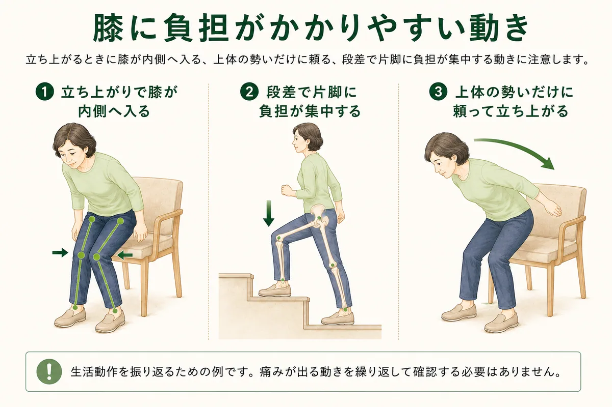
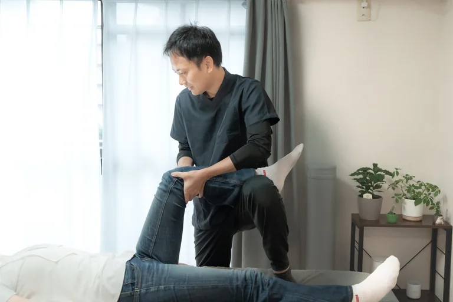
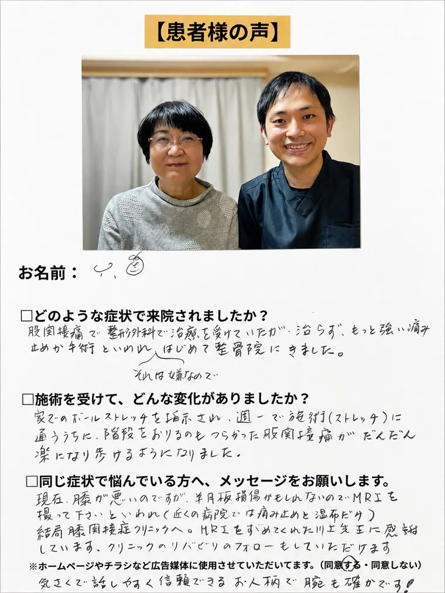

01
足部・足関節
足首は歩く、しゃがむ、階段を使うときに前へ曲がる必要があります。足首が動きにくい場合、その不足を膝や股関節など別の場所で補うことがあります。足の裏がどこで地面に接しているか、体重がどう移るかも確認します。

柏市・柏駅周辺で変形性膝関節症にお悩みの方へ
医療機関で「変形性膝関節症」と説明されると、この先さらに歩けなくなるのではないか、運動してよいのか、と不安になる方も少なくありません。レントゲンなどで確認される関節の変化は大切な情報ですが、実際の痛みや歩きやすさ、階段のつらさは一人ひとり異なります。当院では医療機関での診断を大切にしながら、膝だけでなく股関節・足首・筋肉の使い方、立ち上がりや歩き方まで確認します。
膝の関節は、太ももの骨である大腿骨、すねの骨である脛骨、お皿と呼ばれる膝蓋骨などでつくられています。骨の表面には関節軟骨があり、半月板や靱帯、関節を包む組織、周囲の筋肉などとともに、膝を滑らかに動かし、体重を支えています。
変形性膝関節症は、年齢による変化、これまでの負担、体重、過去のけがなど複数の要素が関係し、関節軟骨だけでなく骨や半月板などを含む膝関節全体に変化が起こる状態です。
初期には歩き始めや立ち上がりで痛みを感じ、中期以降では階段や正座がつらくなったり、膝が伸びにくくなったりすることがあります。進み方や症状の出方には個人差があります。
なお、膝の痛みを「軟骨が減ったから」と一つの理由だけで説明することはできません。関節の状態に加えて、腫れや炎症、可動域、筋力、活動量なども症状に関係する可能性があります。

症状は一人ひとり異なりますが、歩き始め、椅子からの立ち上がり、階段、長い距離の歩行などで痛みを感じることがあります。膝が腫れる、曲げ伸ばしがしにくい、最後まで伸びにくい、O脚が目立つように感じるといった変化がみられる場合もあります。
膝の腫れや水が気になる場合は、膝に水がたまる・膝の腫れのページでも受診目安を整理しています。
レントゲンなどの画像は、膝の状態を知るうえで重要です。一方で、画像で確認される変化だけで、毎日の困りごとをすべて説明できるわけではありません。
同じ「変形性膝関節症」という診断でも、買い物なら歩ける方もいれば、10分ほど歩くと痛みが出る方、階段の下りだけがつらい方、立ち上がりの最初だけ痛む方もいます。
そのため当院では、診断名だけで施術内容を決めません。どこが痛むのかに加えて、膝がどこまで曲がる・伸びるのか、筋力はどうか、どのくらい歩けるのか、生活の中で何を取り戻したいのかまで確認します。
「画像上どう見えるか」と「今の身体で何ができ、どの場面で困っているか」の両方を大切にします。
変形性膝関節症では、状態に応じて保存療法が行われます。一般的には、運動療法、生活指導、必要に応じた体重管理、薬物療法、注射、装具や杖などが検討されます。症状や関節の状態によっては手術が検討されることもあります。
運動療法は、膝周囲の筋力だけでなく、身体機能や日常生活を維持するためにも重要な選択肢の一つです。ただし、適切な運動の種類や量は痛みや腫れ、体力、ほかの病気などによって変わります。
整体院ひざこぞうでは、薬・注射・手術の必要性を判断することはできません。病院での診断や注意点を大切にしながら、治療と並行して動き方や運動について相談していただけます。
変形性膝関節症では膝そのものの状態を確認することが大切です。そのうえで、立つ・歩く・階段を使う動作では、足部、足首、すね、股関節なども一緒に働きます。膝以外を「本当の原因」と決めつけるのではなく、膝への負担を整理するために必要な場所を確認します。
足首は歩く、しゃがむ、階段を使うときに前へ曲がる必要があります。足首が動きにくい場合、その不足を膝や股関節など別の場所で補うことがあります。足の裏がどこで地面に接しているか、体重がどう移るかも確認します。
膝は曲げ伸ばしだけをする関節ではなく、動作の中では太ももの骨とすねの骨の間に小さな回旋も起こります。立ち上がりや歩行時に、膝とつま先の方向が大きくずれていないか、どの向きで体重を受けているかを確認します。
立つ、片脚で支える、階段を上るといった動作では、股関節やお尻の筋肉も身体を支えています。股関節の動きや支える力が小さい場合、膝まわりで踏ん張る動作が増えることがあります。
歩行では、足をついた瞬間から体重を受け、片脚で身体を支え、次の一歩へ体重を移します。当院では、この流れのどの場面で膝に負担が集まっているかを確認します。歩くときに膝が外へ揺れる、身体が大きく傾く、蹴り出しが小さいなど、実際の動きは人によって異なります。

膝の内側が特に痛む方は膝の内側の痛み、階段や立ち上がりでお皿まわりが気になる方は膝の前側・お皿まわりの痛みも参考にしてください。
初回は、まず「何ができなくて困っているのか」を伺います。変形性膝関節症という診断名が同じでも、買い物、旅行、仕事、階段、散歩など、取り戻したい生活は人によって違うからです。
そのうえで、膝の状態を軸に、関係する可能性のある場所を評価し、実際の動作で確かめます。「何となく全身を見る」のではなく、必要な場所を見て、動作とのつながりを確認することを大切にしています。

当院の基本は「緩める → 鍛える → 正しく使う」です。強く揉むことや、同じ筋トレを全員に行うことが目的ではありません。今の状態に合わせて、動きやすさ、必要な筋肉の働き、実際の生活動作を順番に確認します。
緩める｜動きやすい状態をつくる
痛みや腫れの状態を確認しながら、必要に応じて徒手療法などで動きにくさを整えます。強く押したり無理に曲げたりすることではなく、次の運動を行いやすい状態をつくることが目的です。
鍛える｜必要な筋肉を使えるようにする
筋肉は、ただ強ければよいわけではありません。立ち上がるとき、片脚で支えるとき、歩くときなど、必要な場面で使えることが大切です。状態に合わせて、お尻や太ももなどの運動を行います。
正しく使う｜荷重と日常動作へつなげる
座った姿勢で運動ができても、歩くときに使えなければ生活の中では活かしにくくなります。状態を見ながら、立つ、体重を移す、片脚で支える、階段、歩行へと段階的につなげます。
最終的には、施術室の中でできることを、買い物や散歩、階段、旅行など実際の生活へつなげることを目指します。セルフケアも「全員が同じ内容」ではなく、今の身体と目標に合わせて提案します。
変形性膝関節症では、身体をまったく動かさないのではなく、状態に合わせて運動を続けることが大切です。ただし、全員が同じ運動を同じ回数行えばよいわけではありません。
「痛みを我慢して続けるほどよい」ということではありません。今の状態に合う範囲を見つけ、継続できる方法に調整することが大切です。
次のような場合は、整体より先に整形外科などの医療機関へご相談ください。変形性膝関節症だけでは説明できない状態が含まれる可能性があります。
迷う場合も、まず医療機関へ相談してください。病院での診断や治療を続けながら、日常動作や運動について整体院へ相談することは可能です。
MEDICAL INFORMATION
当院は医療機関ではありません。診断や画像検査、薬・注射・手術の判断は医療機関の領域です。医療機関での説明を大切にしながら、整体院では膝の動き、股関節・足首、筋肉の使い方、歩行などを確認します。
このページは一般的な情報提供であり、診断を目的とするものではありません。症状や状態は一人ひとり異なるため、必要に応じて医療機関へご相談ください。
PATIENT VOICE
変形性膝関節症と関わりやすいお悩みで来院された方の内容を掲載しています。症状や経過には個人差があるため、初回は状態を確認しながら方針をご説明します。

K.K様

K.T様

Y.O様
※効果には個人差があります。掲載しているお声は掲載許可をいただいた方の個人の感想であり、成果を保証するものではありません。
初回カウンセリング＋全身整体コース
カウンセリング・状態確認込み。まずは相談だけでも大丈夫です。
足腰のつらさを一緒に整理し、動きやすい身体づくりをサポートします。
LINEからご希望日時を送ってください。空き状況を確認して、こちらから返信いたします。
【受付時間】9:00〜19:00 【定休日】日曜
施術中は電話に出られないことがあります。後ほど折り返しお電話いたします。
写真は左右にスライドできます

予約前に特に多い不安だけを、短くまとめました。
注射や湿布だけで様子を見るべきか、手術の話をどう受け止めればよいか、迷うこともあると思います。
当院では医療機関での説明を大切にしながら、今の膝に負担が集まりやすい動きを一緒に確認します。
まずはLINEで、現在の状態を送ってご相談ください。
柏市をはじめ、松戸市・我孫子市・取手市・野田市・流山市・守谷市など近隣エリアからもご来院いただいています。
| 時間 | 月 | 火 | 水 | 木 | 金 | 土 | 日 |
|---|---|---|---|---|---|---|---|
| 9:00〜19:00 | ● | ● | ● | ● | ● | ● | - |
完全予約制／定休日：日曜
詳しい道順・建物入口・駐車場については、アクセスページでご確認いただけます。
最後に、ご相談はこちらから
メールフォームからお名前・お悩み・ご希望日時をお送りください。確認後、折り返しご連絡いたします。
送信が完了しました。
アクセスを確認する